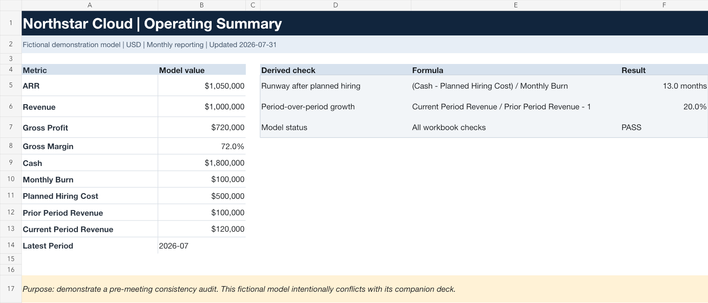
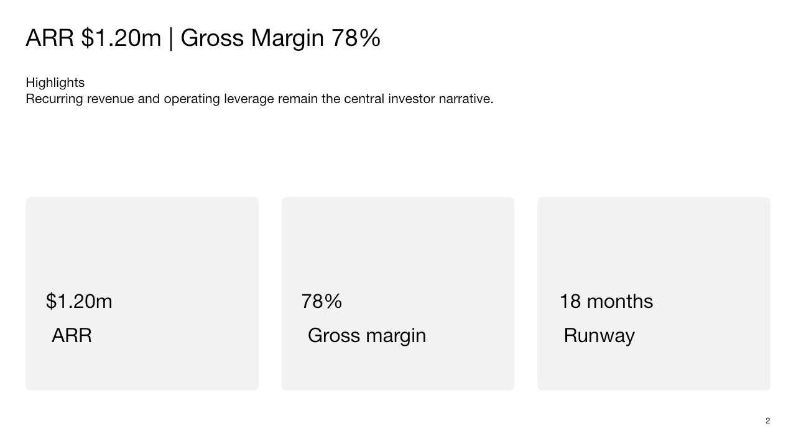
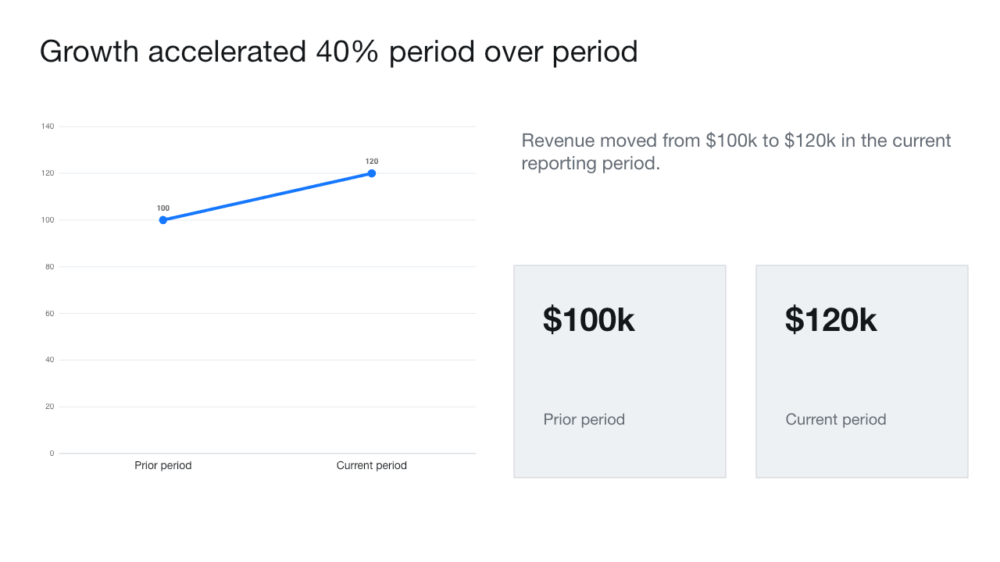

ARR
1050000 at fictional-saas-model.xlsx Summary!B5
$1.20m at fictional-investor-deck.pptx Slide 2
Observed 1.05e+06 versus 1.2e+06 for ARR.
Summary!B5 · Slide 2
A traceable review of one fictional operating model and its companion deck. Every result points back to a sheet cell or slide.

Headline conflicts first, then arithmetic, reporting-period and support issues. The audit does not infer missing explanations.
1050000 at fictional-saas-model.xlsx Summary!B5
$1.20m at fictional-investor-deck.pptx Slide 2
Observed 1.05e+06 versus 1.2e+06 for ARR.
Summary!B5 · Slide 2
72.0% at fictional-saas-model.xlsx Summary!B8
78.0% at fictional-investor-deck.pptx Slide 2
Observed 0.72 versus 0.78 for gross margin.
Summary!B8 · Slide 2
18 months at fictional-investor-deck.pptx Slide 3
1800000 at fictional-saas-model.xlsx Summary!B9
100000 at fictional-saas-model.xlsx Summary!B10
500000 at fictional-saas-model.xlsx Summary!B11
(Cash 1,800,000 - planned hiring 500,000) / monthly burn 100,000 = 13.0 months.
Slide 3 · Summary!B9 · Summary!B10 · Summary!B11
40.0% at fictional-investor-deck.pptx Slide 4
100000 at fictional-saas-model.xlsx Summary!B12
120000 at fictional-saas-model.xlsx Summary!B13
(120,000 / 100,000) - 1 = 20.0%.
Slide 4 · Summary!B12 · Summary!B13
through June 2026 at fictional-investor-deck.pptx Slide 5
2026-07 at fictional-saas-model.xlsx Summary!B14
Deck period 2026-06 does not match model period 2026-07.
Slide 5 · Summary!B14
TAM is $5B at fictional-investor-deck.pptx Slide 6
No dated source or calculation basis is visible with the market-size claim.
Slide 6
The deck claims 40% growth while its own visible revenue points move from $100k to $120k, which calculates to 20%.


Designed for a pre-meeting check, not a professional opinion.
This is a document-consistency and decision-support review. It does not provide investment advice, accounting certification, tax or legal conclusions, valuation opinions, or fundraising guarantees. Confirm material corrections with the responsible finance, legal, tax, or investment professional.